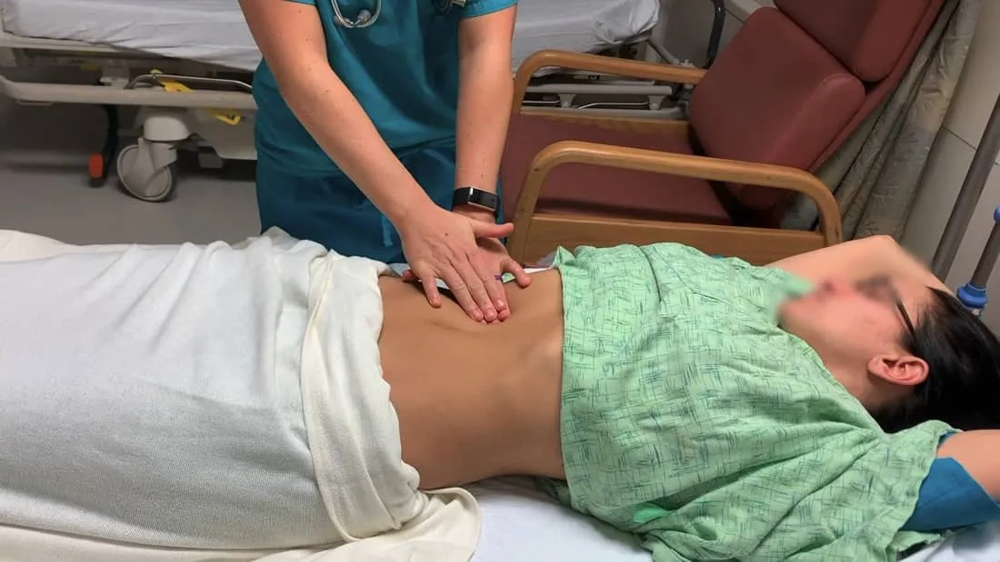
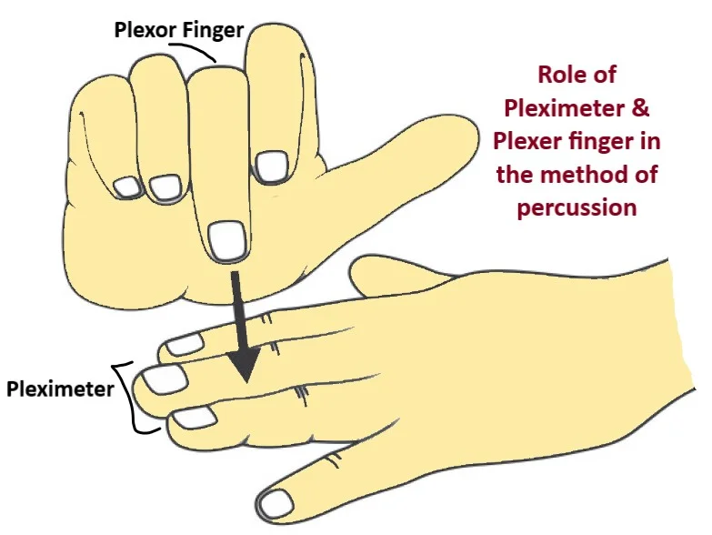
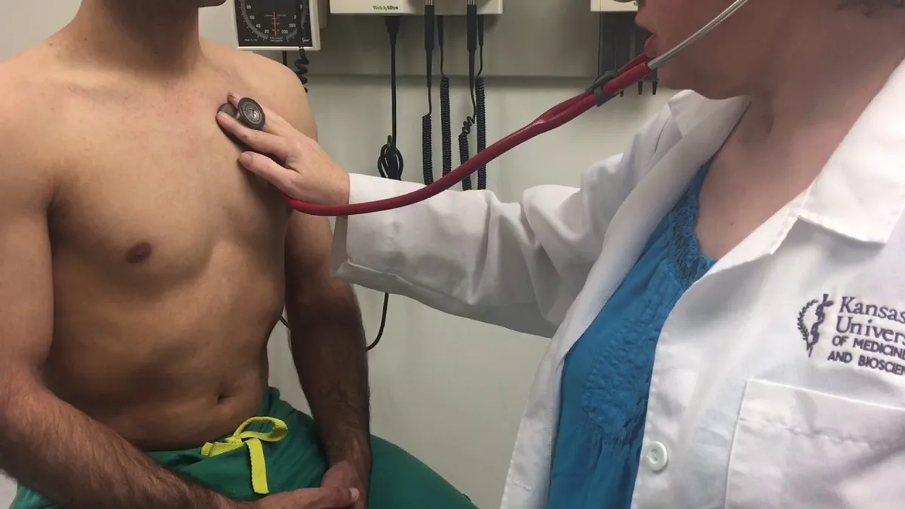
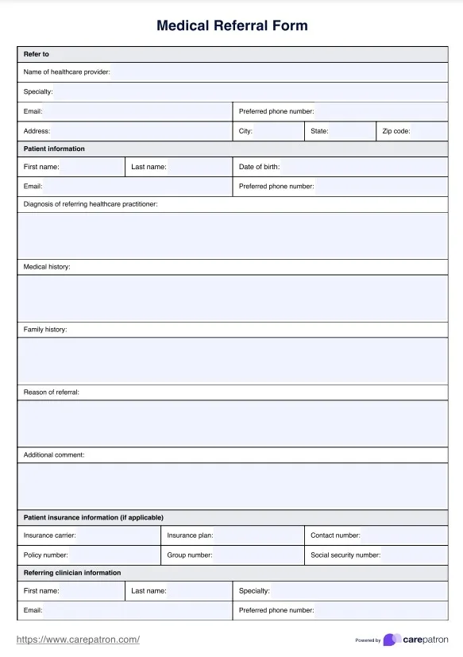
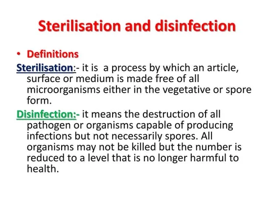
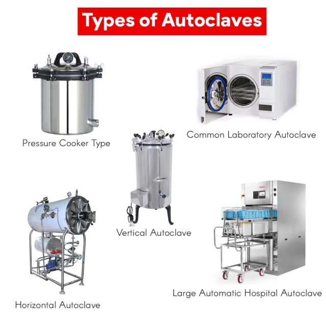

Expanded Nursing Uganda Explanation
Transfer patients should be understood beyond a short definition. Link the concept to patient history, focused assessment, common risks, nursing priorities, documentation and evaluation of outcomes.
01 Admission (PEX 2.5.1: Admit patients)
ADMISSION, OBSERVATION AND DISCHARGE OF PATIENTS
Admission Is the allowing of a patient(s) to stay in hospital for observation, investigation, treatment and care purposes.
Purpose (of Admission):
- For proper management of the patient’s condition.
- To assess the patient’s status from which a nursing care plan can be initiated and implemented.
- To make the patient feel welcome , comfortable and at ease.
- To acquire vital information regarding the patient for further management.
- To monitor the patient’s progress and sudden changes; this produces fear and anxiety.
Types of admission:
- Emergency admission: This means the patient are admitted in acute conditions requiring immediate treatment e.g. patient with accidents, poisoning, burns and heart attacks. Routine admission is postponed until the patient is out of danger.
- Routine/planned admission: The patients are admitted for investigations, medical or surgical treatment given accordingly e.g. patients with hypertensions, diabetes and bronchitis. Preparation before the arrival of the patient on ward is started when the ward is informed of incoming patient and all the necessary items are made ready according to the patient’s condition.
General Rules on Admission:
- Nurses should make every effort to be friendly and courteous with the patient (good nurse-patient relationship)
- Make proper observations of the patient’s condition, record and report.
- Orient the patient and relatives to hospital and ward policies.
- Observe policies in dealing with medico-legal cases.
- Deal with the patient’s belongings very carefully to prevent communicable diseases.
- Isolate the patients who are suffering from communicable diseases.
- The nurse should recognize the various needs of the patient and meet them without delay.
- There is need to understand the fears and anxieties of the patient and help them to over come.
- The nurse should find out the likes and dislikes of the patient and include the patient in his plan of care.
- The nurse should address the patient by their name and proper title.
- The patient’s valuables and clothes should be handed over to the relatives with proper recording.
Equipment needed for admission:
- Admission bed
- Vital observation equipment
- Equipment used for physical examination such as weighing scale, inch tape measure etc.
- Admission forms (patient’s case sheet, doctors, nurses’ and progress notes)
- Investigation forms (blood, x-ray, urine stool and sputum)
- Bath trolley if needed.
- Complete record in a file.
- Emergency treatments, oxygen apparatus, suction apparatus.
- Admission book.
Procedure (Admitting a Patient):
- When the ward has been informed that a new patient is going to be admitted, a bed is prepared either; an admission bed for a seriously ill patient as this patient needs a bed bath OR an occupied bed for walking patient as s/he will be able to go to the bathroom.
- On arrival: - greet the patient and relatives and introduce yourself to them.
- Receive the patient cordially and seat them comfortably.
- Introduce the patient to other persons in the ward if necessary.
- Complete the admission record and should be filled in block letters especially full name, age, address, phone number if possible.
- Collect history and carry out simple physical examination e.g. vital observations, weight and consent form signed if required. The charts are filled by the nurse in charge.
- Issue visitor a pass or explain to the relatives rules about visiting hours and then they can leave. Do not let them go if you will need consent form signed in case of minors.
- Handover the patient’s valuables to the relatives if need be.
- Orient the patient to the ward; toilet, bathroom, drinking water supply, nurse’s station and treatment room.
- Help the patient to maintain personal hygiene and change into hospital clothes. A bed bath should be given to patients who cannot do it for themselves and those who can go to the bathroom depending on the condition.
- Encourage the patient to take hospital diet if any, especially when therapeutic diet is ordered.
- A specimen of urine should be obtained, tested or sent to the laboratory for investigation.
- A nurse should observe the patient , during the admission especially when giving a bed bath and note any obvious deformities or skin conditions and report or record in the patient’s chart.
Observations made on admission: The nurse should observe the patient for the following;
- Observe the whole patient, whether weak, paralyzed, emaciated edematous, dehydrated etc.
- Special observations: Skin: color; pale, blue, jaundice, on touch, warm/cold, clammy or dry, sores, operation scars etc.
- Eyes: yellow, infected, sunken
- Mucous membrane: pale, blue, dry, moist, tongue; coated, conjunctiva; pale, infected
- Skeletal system: deformities, injuries, wounds, paralyzed, gait.
- Excreta: stool; color, quantity, smell, formed or diarrhea, with blood. Urine; color, quantity, smell, frequency. Vomit; frequency, quantity, content. Sputum; mucus, blood, purulent.
- Vital observations: Temperature, Pulse rate, Respiration, Blood pressure.
- Mental state: oriented, conscious, semi-conscious, unconscious, delirious.
- Position in bed: posture
- Facial expression: anxious, worried, feeling pain.
Equipment for diagnostic examination: All the equipment needed for the physical examination are kept ready at hand.
- Sphygmomanometer
- Stethoscope
- Fetoscope
- TPR tray (thermometer, wrist watch and patient’s chart)
- Tongue depressor
- Pharyngeal retractor
- Laryngoscope
- Tape measure
- Flash light (torch)
- Weigh machine and height measurement
- Ophthalmoscope
- Otoscope
- Tuning fork and head mirror
- Nasal speculum
- Patellar hammer (percussion hammer)
- Safety pins
- Cotton wool
- Cold and hot water
- Snelle’s chart
- Alcohol swabs
- Drape or sheet
- Dressing gauze
- Gloves (sterile and non-sterile)
- Lubricants
- Pen light
- Wool or cotton applicator
- Skin pencil
- Substance for testing smell (e.g. pepper, mint) and taste (sugar, salt)
- Toilet paper
- Swabs
- Sponge forceps
- Specimen containers and slides
- Protoscope
- Spatula
- Vaseline or KY jelly
- Hebitane/antiseptic lotion
- Labels and lab forms
- Test tubes and pipettes
- Vaginal speculum
Methods of Examination:
- Inspection: Visual examination of the body is called inspection. It is the observation with the naked eyes to determine the structure and functions of the body.
- Palpation: It is the feeling of the body or parts with the hands to note the size and positions of the organs. In palpation the finger pads are used to feel, not the finger tips.
- Percussion: Is the examination by tapping with the fingers on the body to determine the condition of the internal organs by the sound that’s produced. It is done by placing a finger of the left hand firmly against the part to be examined and tapping with the finger tips of the right hand.
- Auscultation: It is the listening to sounds within the body with the aid of a stethoscope, fetoscope or directly with the ear placed on the body.
- Others: Manipulations: It is moving of the part of the body to note the flexibility. A limitation of movements is discovered by this method.
- Testing reflexes: The response of the tissues to external stimuli is tested by the means of percussion patellar hammer, safety pins, wisp of cotton, hot and cold water etc.
ROLES OF NURSE BEFORE, DURING AND AFTER THE DIAGNOSTIC EXAMINATION
Before (Diagnostic Examination):
- Nurse prepares patient by ensuring the patient understands and compliance with the pre-procedure requirements.
- Reassurance of the patient and care taker/family.
- Teach relaxation techniques e.g. deep breathing exercises.
- Ensure the patient is in the list of patients to be worked on.
- Collect the specimen for investigation including blood for grouping and cross matching.
- Pass catheter if need be.
- Nil per mouth if ordered by the physician.
- Removal of objects e.g. jewellery or hair clips and any other object which will interfere with the procedure.
- Ensure all supplies and equipment to be used available
- Review patient’s history and physical information to determine current condition, chief complaint.
- The patient’s identity is checked
- Ensure safe keeping of the patient’s valuables
- Determine current medications patient is taking, existence of allergies, history of drug use or abuse including tobacco and alcohol, adverse experience with anesthesia, sedatives or analgesics and last oral intake.
- Reinforce physician’s explanations of procedure to patient and family-patient education.
- Minimize anxiety through anxiety management techniques, ensuring short waiting time and offering reassurance and support
- Ensure written consent is obtained
- Obtain and document baseline data on patient; temperature, heart rate, and rhythm, respiratory status including oxygen requirements, depth of respirations, breath sounds and oxygen saturation, blood pressure, skin condition, level of consciousness and mental status, ability to ambulate, weakness and/or sensory loss in extremities (if indicated), and description and intensity of any current painful condition.
- Pass I.V line and regulate continuous infusion at a keep open rate.
- Prepare all drugs to be administered including readying reversal agents for possible administration.
During (Diagnostic Examination):
- Administer medications under direct supervision of responsible physician.
- Continuously observe and document patient responses.
- Provide reassurance and emotional support throughout the procedure.
- Inform the physician immediately of adverse response or any significant changes in baseline parameters.
- Maintain continuous I.V line if required.
- Perform emergency management procedure if necessary.
- Continuous reassurance of the patient and care take (if any) during the procedure.
- Encourage relaxation of the muscles.
- Check the patient’s identification band to ensure the correct patient.
- Review the medical record of allergies .
- Assess vital signs including pain throughout the procedure.
- Assist the physician with the procedure.
- Assess the patient’s ability to maintain and tolerate the prescribed position.
- Assess for related symptoms indicating complications specific to the procedure.
- Remain with the patient during induction and maintenance of anesthesia .
- Position, drape and monitor the patient’s condition e.g. monitor the patient’s air way.
- Explain what the physician is doing so that the patient knows what to expect.
- Label and handle the specimen according to the type of materials obtained.
- Secure clients transport from the diagnostic area .
After (Diagnostic Examination):
- Check the identification band and call the patient by name.
- Assess the patient closely for signs of air way distress, adverse reaction to anesthesia or other medications.
- Assess for bleeding in those areas where a biopsy was performed.
- Continue monitoring the patient’s condition - observe and record the vital parameters
- Position the patient in recommended position for comfort and accessibility to facilitate performance of nursing measures.
- Assess and document vital signs including pain and monitor according to the frequency required for the specific test.
- Notify the physician when any results are obtained from the diagnostic test
- Reassure the patient and family
- Maintain I.V line if required and administer medications prescribed.
- Implement the physician’s orders regarding the post procedure care of the patient.
- Evaluate the patient’s tolerance to exercises and oral fluids .
- Record the procedure.
- Notify the physician when the patient is fully alert or recovered for an order to discharge.
- Review discharge instructions .
02 Transfer (PEX 2.5.2: Transfer patients) & Referral
REFERRAL/TRANSFER PROCEDURE Transfer/referral is the preparation of a patient and the referral records in order to shift or move the patient to another department within the same hospital or to another hospital/home.
Purpose (of Transfer/Referral):
- To provide necessary treatment and nursing care
- To provide specialized treatment/care
- To obtain necessary diagnostic tests and procedures
- To place most appropriate utilization of available personnel and services
- To match intensity of care , based on the patient’s level of needs and problems
Types of transfer of the patient:
- Internal transfer: Is the transfer of the patient to a unit that provided special care or care suiting to his needs within the hospital e.g. from the general wards to intensive care unit (ICU)
- External transfer: Is the transfer of the patient from one hospital to another for the purpose of special care e.g. from a general hospital to a specialized hospital i.e. cancer centre/institute.
Equipment needed (for Transfer):
- Wheel chair/stretcher (transport)
- Identification labels
- Patient’s belongings
- Patient’s investigation records and file
Procedure (Transferring a Patient):
- Check the doctor’s order for the transfer of the patient
- Inform the patient and relatives , concerned department about the transfer of the patient.
- Assess the method for transport
- Inform the receiving ward in-charge/hospital where the patient is to be transferred.
- Check the patient’s chart for complete recording of vital signs, nursing care and treatment given.
- Collect all the patient’s investigation reports e.g. x-rays and help the relatives to collect other belongings.
- Maintain the patient’s physical well being during transport to a new nursing unit/hospital, as you assist his arrival to the new unit.
- Cancel the hospital diet of the transferring patient if she has been on special diet.
- Make arrangements to settle the due bills if going to another hospital.
- Record the date, time, mode of transfer and general condition of the patient by the time of transfer.
- Assist in transferring the patient to a wheel chair or stretcher and accompany the patient to the new area.
- On arrival, hand over the patient, documents, belongings and report verbally to the in-charge nurse of the receiving unit/hospital about the patient’s condition and what has been done.
- Collect the ward/previous hospital’s articles and come back with it (them)
- Clean the unit and equipment thoroughly and keep ready for the next patient/use.
03 Discharge (PEX 2.5.3: Discharge of patients)
(Note: The provided notes combine Admission, Observation, and Discharge in a single title, but detailed procedural steps specifically for "Discharge of patients" are not explicitly outlined as a numbered procedure in the same way as others in your document. Based on the context and common nursing practice, the discharge process typically involves ensuring the patient is medically stable, providing discharge instructions, arranging follow-up care, and completing necessary paperwork.)
Discharge of a patient is the process of formally releasing a patient from the hospital or healthcare facility. It is a planned process that begins early in the patient's stay.
Key aspects of the discharge process generally include:
- Confirmation of medical stability and readiness for discharge by the physician.
- Providing clear and understandable discharge instructions to the patient and/or family, including medication schedules, dietary restrictions, activity limitations, and wound care (if applicable).
- Educating the patient and family on signs and symptoms to watch for and when to seek further medical attention.
- Arranging for follow-up appointments or home healthcare services if needed.
- Completing all necessary discharge paperwork and documentation.
- Ensuring the patient has transportation arranged to their next destination.
- Gathering and returning the patient's personal belongings.
- Answering any final questions the patient or family may have.
04 Decontamination (PEX 2.6.1: Carry out decontamination)
Decontamination Is the process of rendering objects and surfaces free of most organisms and safe to handle and use.
Decontamination is often the first step in reprocessing reusable medical devices, making them safe for further cleaning, disinfection, or sterilization. It reduces the risk of exposure to healthcare workers handling contaminated items.
This PEX focuses on demonstrating:
- Handling contaminated items safely using appropriate PPE.
- Cleaning visible soil from instruments and equipment.
- Soaking items in appropriate disinfectant solutions (if applicable) before further processing.
- Using cleaning procedures to remove microorganisms (approximately 80% of microorganisms are removed during cleaning).
- Following facility policies for handling and initial processing of contaminated items.
(Note: Detailed procedural steps specifically for "Decontamination" as a separate procedure were not provided in the original notes, but the concept is integrated into cleaning and sterilization protocols).
05 Sterilization (PEX 2.6.2: Carry out sterilization) & Disinfection
Sterilization Is the process by which the pathogens as well as spores and viruses are destroyed.
Sterilization aims to eliminate *all* forms of microbial life, including highly resistant bacterial spores. It is essential for items that will penetrate sterile tissue or enter the vascular system.
Disinfection Is the means of destroying pathogenic organisms carried out to render instrument and surfaces free for safe handling and use.
Disinfection reduces the number of pathogenic microorganisms but does not necessarily eliminate all spores. It is used for items that come into contact with intact skin or mucous membranes.
This PEX focuses on demonstrating:
- Selecting the appropriate sterilization or disinfection method based on the type of item and its intended use.
- Preparing items for sterilization or disinfection (e.g., cleaning, packaging).
- Operating sterilization equipment (e.g., autoclave - if applicable and trained).
- Using appropriate disinfectants at the correct concentration and contact time.
- Handling sterilized or disinfected items aseptically.
- Monitoring and documenting the sterilization or disinfection process.
Principles related to Sterilization and Disinfection from the notes:
- Proper sterilization policy is a code of practice, which if correctly followed will ensure a clean and safe health unit, where multiplication and spread of harmful microbes is kept under control.
- Disinfect, clean and sterilize items like Drainage under water seal gadgets.
- Wash the flatus tube with soap and water, autoclave or sterilize the tube for 5 minutes.
- General principles in patient care
- Nursing procedures and applications
- Ethics in nursing care (related to patient rights, confidentiality)
- Infection prevention and control principles
- Patient rights (relevant to admission/discharge)
- Body mechanics (relevant to patient transfer)
- Communication skills (relevant to admission/transfer/discharge/reporting)
06 Nursing Uganda Clinical Lens
Use Admission of a patient as a practical nursing topic, not only a memorized definition. Turn the topic into practical nursing knowledge: meaning, assessment, care priorities, teaching and evaluation.
- What to understand first: define admission of a patient, identify the normal or expected pattern, then explain what changes when the patient is unwell.
- Why it matters in care: the nurse must recognize risk early, explain findings clearly, document accurately and know when to escalate.
- How to revise it: connect each point to assessment, nursing diagnosis or care problem, intervention, rationale and evaluation.
07 Assessment Guide
- Key definitions, patient history, focused observations and risk factors.
- Findings that are normal, abnormal or urgent.
- Resources, referral needs and documentation requirements.
08 Nursing Priorities, Rationales and Outcomes
- Protect safety, comfort, dignity and infection prevention.
- Provide clear care, education and escalation when needed.
- Evaluate response and record what changed.
The rationale for these priorities is patient safety: nursing actions should prevent deterioration, reduce discomfort, support recovery and create clear evidence for the next caregiver.
- Expected outcome: The topic is understood in a way that supports safe nursing judgement and revision.
09 Patient Teaching and Revision Check
- Explain admission of a patient in simple language the patient or caregiver can repeat back.
- Teach warning signs, medicine or follow-up instructions, hygiene or lifestyle points where relevant.
- For exams, prepare a short answer using: definition, causes or risk factors, signs, assessment, management, complications and prevention.
- For ward practice, document baseline findings, actions taken, patient response and the plan for review.
Illustrations and Diagrams (10)







2 more diagrams available, open the lesson for full illustrations.
Related Video Lectures
Watch nursing lecture videos on YouTube for this topic. Opens in a new tab.
Watch on YouTubeExternal link: YouTube may use its own cookies and terms. Nursing Uganda is not affiliated with YouTube.